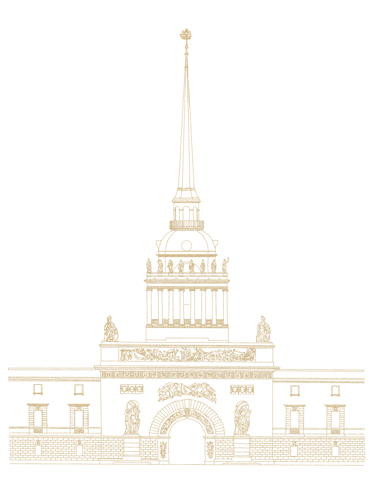

Город внутри тебя
Исследование эмоционального ландшафта Петербурга
00 // Концепция
Петербург - это не только холодный гранит и строгие чертежи. Это масштабная проекция человеческой души. Мы разложили код города на четыре базовых чувства, чтобы вы могли найти свое отражение в камне и золоте. Наш проект — это навигатор по внутреннему миру, скрытый в фасадах дворцов и строгих линиях заводов.
